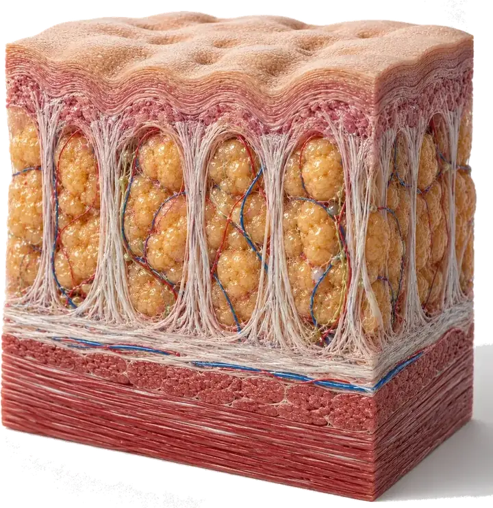
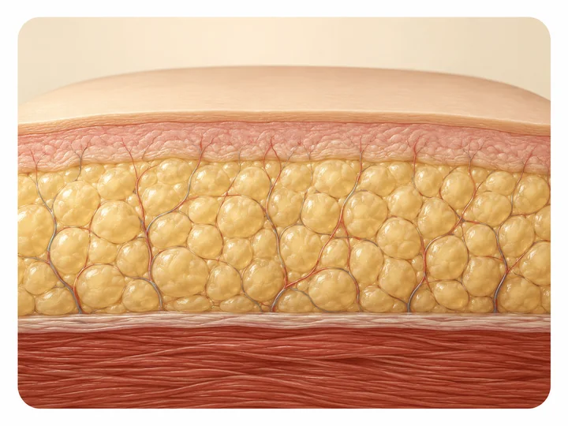
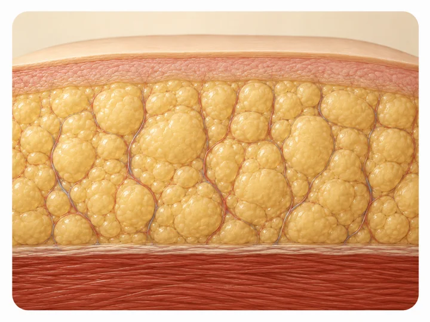
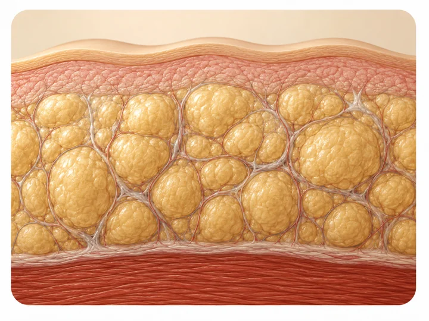
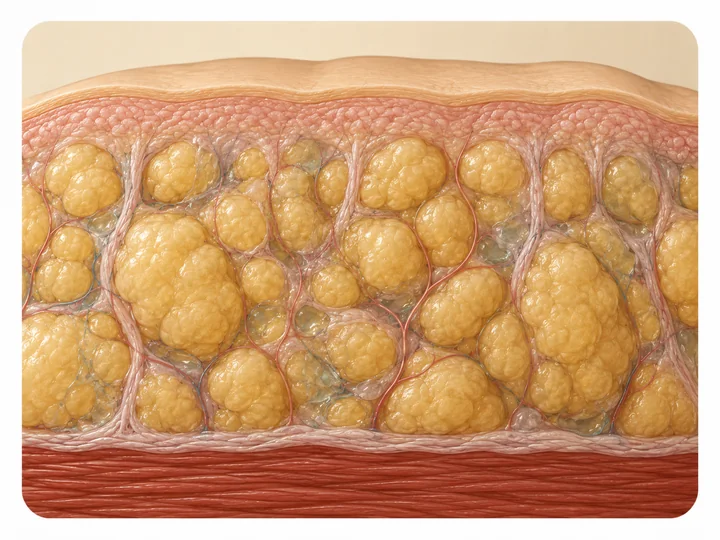

Una condición crónica, con frecuencia mal diagnosticada. La identificamos a tiempo y la manejamos de forma integral.
Desliza para explorar ↓¿Qué es?
El lipedema es una acumulación anormal de grasa que afecta principalmente piernas y brazos, con dolor, pesadez y sensibilidad. Con frecuencia se confunde con sobrepeso o con celulitis, lo que retrasa el diagnóstico durante años. Pero bajo la piel se ven distintos:

Lipedema
La grasa forma nódulos redondeados que se acumulan, crecen y duelen al tacto.

Celulitis
Son fibras (septos) que jalan la piel hacia abajo y forman los hoyuelos.
Explóralo
Toca una zona del cuerpo y descubre qué ocurre ahí y cómo la abordamos.
 Toca un punto +
Toca un punto +
Zona afectada
Cada zona te muestra qué ocurre ahí en el lipedema y cómo la abordamos en Seravena.
O explora por zona
Progresión
Arrastra el control y mira cómo el tejido avanza de una etapa a la siguiente.
La clasificación se apoya en cómo se ve y se siente la piel, cómo está el tejido justo debajo y cuánto interfiere con el movimiento: etapa 1, piel lisa con nódulos palpables; etapa 2, superficie irregular tipo colchón; etapa 3, lóbulos grandes que deforman el contorno; etapa 4 o lipo-linfedema, cuando se suma retención de líquido. La progresión suele ser lenta y no todas las mujeres pasan por las cuatro.




Etapa 1La grasa aumenta de forma pareja. La piel se ve normal, aunque ya hay desproporción.
Para estar atenta
Si te identificas con varias de estas señales, una valoración especializada puede darte respuestas.
Piernas o brazos desproporcionados respecto al torso, que no cambian con dieta o ejercicio.
Dolor al tacto, sensación de pesadez y cansancio en las extremidades, sobre todo al final del día.
Aparición de moretones sin causa clara, por fragilidad de los pequeños vasos.
Autoevaluación
Responde 6 preguntas rápidas. Es anónimo y orientativo — no reemplaza una valoración médica.
Pregunta 1 de 6
¿Tus piernas o brazos se ven desproporcionados respecto al resto del cuerpo?
Enfoque multidisciplinario
El lipedema se aborda desde todos los frentes. En Seravena trabajas con un equipo completo, no con un solo especialista.
Manejo médico de la nutrición y la inflamación.
Plan de alimentación práctico y sostenible.
Movimiento seguro y adaptado a tu condición.
Acompañamiento emocional en todo el proceso.
Subespecialista que dirige el manejo clínico.
Imágenes precisas para confirmar y seguir tu caso.
Seguimiento cercano en cada etapa.
Manejo del dolor y la medicación cuando aplica.
Diagnóstico
Es un diagnóstico clínico: no depende de un único análisis, sino de tu historia y de un examen físico cuidadoso. Hasta hoy no existe una prueba de laboratorio, genética o de imagen aprobada que lo confirme por sí sola, y por eso importa tanto quién te examina.
Cuándo empezaron los cambios, cómo han evolucionado y si coincidieron con la pubertad, un embarazo o la menopausia: el lipedema suele iniciar o agravarse en momentos de cambio hormonal. También pesan los antecedentes familiares, porque no es raro encontrar a varias mujeres de una misma familia con la condición.
Se valora la simetría, la proporción entre extremidades y torso, el dolor a la palpación, la facilidad para los moretones y si manos y pies quedan respetados. Un signo habitual es el de Stemmer, que se explora pellizcando la piel en la base del segundo dedo del pie. Son señales orientativas que se leen en conjunto, no reglas fijas.
Ninguna imagen confirma el lipedema por sí sola, pero ayudan cuando el cuadro no es claro. La ecografía permite medir el grosor del tejido graso y valorar si hay un componente de líquido. El eco doppler venoso sirve para descartar una insuficiencia venosa u otras causas de hinchazón que se confunden con esto.
Dónde estamos
Atendemos en Medellín, en la Calle 2 Sur No. 46-55, oficina 1316, y recibimos pacientes de toda el área metropolitana y de Antioquia. Muchas llegan después de años escuchando que era solo sobrepeso: distintos registros de pacientes documentan retrasos de varios años hasta que alguien nombra la condición.
Aquí el lipedema no se trata desde una sola especialidad. El manejo es conservador y multidisciplinario, y su objetivo es controlar los síntomas, sostener el tejido y frenar el avance. Hoy el lipedema no tiene cura, y preferimos decírtelo en la primera consulta antes que prometerte lo contrario.
Preguntas frecuentes
El lipedema afecta ambas piernas o ambos brazos por igual, casi siempre respetando manos y pies, y duele al tocarlo. La grasa por obesidad no suele doler, se distribuye por todo el cuerpo y responde en mayor o menor medida a la dieta y al ejercicio. En el lipedema, en cambio, las piernas siguen desproporcionadas aunque pierdas peso en otras zonas.
En la etapa 1 la piel se ve lisa pero al palpar se sienten pequeños nódulos, y ya puede haber dolor al tacto. En la etapa 2 la superficie se vuelve irregular, tipo colchón. En la etapa 3 se forman lóbulos grandes que deforman el contorno y la piel se endurece. En la etapa 4, o lipo-linfedema, se suma retención de líquido. No todas las mujeres pasan por las cuatro.
Hoy no tiene cura, pero sí se puede manejar. El abordaje con mejores resultados es el multidisciplinario: puede incluir drenaje linfático manual, prendas de compresión, actividad física de bajo impacto y, en muchos casos, acompañamiento nutricional y psicológico. El objetivo es controlar los síntomas y frenar el avance.
Porque el tejido graso afectado parece resistente a la dieta y al ejercicio, incluso cuando bajas de peso en otras zonas del cuerpo. Eso no significa que la alimentación no importe: ayuda a controlar el peso corporal total y a reducir la inflamación que suele acompañar al lipedema.
El lipedema es una enfermedad crónica del tejido graso, casi siempre simétrica y en mujeres. El linfedema es la acumulación de líquido linfático bajo la piel. Con los años pueden convivir: si el tejido del lipedema sobrecarga el sistema linfático, se suma un componente de líquido y se habla de lipo-linfedema.
Porque el lipedema se asocia a los momentos de cambio hormonal marcado: la pubertad, el embarazo y la menopausia. La relación entre hormonas y lipedema es un campo de investigación activo, y algunos estudios sugieren que la caída de estrógeno puede afectar el tejido conectivo y favorecer la retención de líquidos.

Da el primer paso
Agenda una valoración y obtén un diagnóstico claro y un plan a tu medida.
Del blog médico
Nuestro equipo médico publica cada semana material claro y verificado sobre lipedema. Estos son los artículos por los que conviene empezar.
Por qué no es sobrepeso, cómo se reconoce y qué lo distingue de la grasa común.
LeerQué mira el médico, qué signos busca y por qué no existe una única prueba.
LeerLas cuatro etapas, qué cambia en cada una y por qué importa actuar temprano.
LeerPor qué duele, qué lo empeora y qué alternativas hay para controlarlo.
Leer